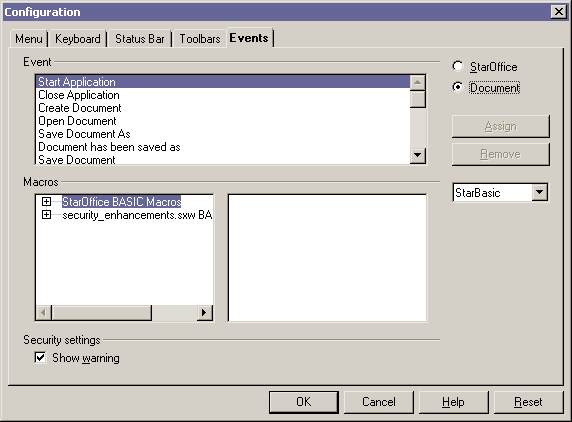
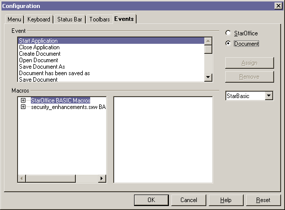
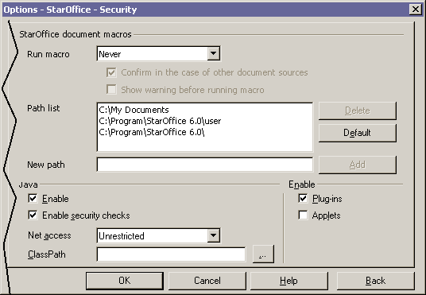
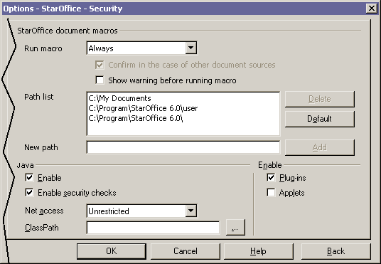

Macros in all documents, executed via file:// url; will be executed without warning.
A solution to solve this problem is to give users the possibility to set all macro related security settings in Tools-Option-Security tab.
The following steps should solve the problem.
The path list (Tools-Options-Security) contains all
trusted path given by users. The default
'file://' entry in the path list should be replace by more precise paths listed
below:
$instURL
$userURL
$workDIR
All path has to point to standard folders. Changing the old file URL to the three new once provides more security due to the fact that users do not have the possibility to run macros from directories like Temp for example.
The three radio buttons (From list, Never execute, Always execute) located on the Tools-Options-Security page will be replace by a dropdown list box (labeled Run macros) which contains the three options
Old Term New Term From list According to path list Never execute Never Always execute Always
The options will be renamed as listed below:
In addition beneath to the Run macros dropdown list box are located
two check boxes. The first one is labeled Confirm in the case of other document
sources the other is labeled Show warning before running macros. The
Show warning before running feature is the renamed and removed feature of
Tools-Configure-Events / Security settings (Figure 1
& 2)
The Confirm in the case of other document sources option will be enabled
if users chose the According to path list option in the dropdown list,
otherwise the Confirm ..... item remains disabled (grayed out).
The
Show warning before running macros option
will be disabled if the option Never
was chosen in the Run Macros
dropdown list box. The states are illustrated in Figure 3,4,5
& 6.
The warning message which appears, if a macro will be run from a location which is not trusted, should be expanded by a more detailed information. The renewed warning dialogue needs much space for text than the old one.
Current Text
An event to which a macro is configured has been started. Do you want to
execute the macro?
CheckBox Do not warn again for
this document.
OKButton Run
CancelButton Don't run
New Text (macro title is an example):
An event to which a macro, called "soffice.Gimmicks..GetTexts. GetCalcGraphicNames",
is configured has been started. Do you want to run the macro?
CheckBox Do not warn again
for this document.
OKButton Run
CancelButton Don't run

Illustration 1 current Configuration/Events tab

Illustration 2 Configuration/Events dialogue after removing
the "Show warning" option.

Illustration 4 The security dialogue with "Run macro Never"
option

Illustration 5 The security dialogue with "Run macro Alway"
option